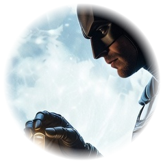

Gotham City. 03:00. Сигнал — капсула №21 вскрыта.
«Город не спит. Значит, и я не сплю. Сегодня в небе горит мой знак — а под ним кто-то, кого я не ждал. В музее вскрыта капсула. Моя капсула. Я иду за ней.»
03:12
Музей Готэма. Кабинет редкостей. 03:12.
«Она спустилась с потолка на тросе — бесшумно, как всегда. Но в её руке блестел не алмаз. То была капсула. Моя капсула. №21.»
03:24
Крыши Готэма. Ветер в лицо. 03:47.
«Крыша. Крыша. Крыша. Кнут свистит у самого виска. Я почти догнал — и почти не хочу догонять.»
03:41

Край крыши. Луна. Глаза в глаза. 04:12.
— Я пришла не за алмазом, — сказала она и протянула капсулу. — Внутри — не для Готэма. Для тебя.
03:55
04:33. Тишина.
«Ни сирен, ни погони. Только двое на крыше, луна и капсула между нами. Одна минута тишины — и всё, что я хотел сказать, уже сказано.»
04:07
Капсула времени №21
«Нужна не сила. Нужен код.»
04:20
▶ Запустить плёнку
«Капсула открыта. Внутри — не кассета. Внутри — плёнка нашей ночи. Вставь её, и всё повернётся вспять.»
Кассета закрыта. Введи код ниже.
04:33